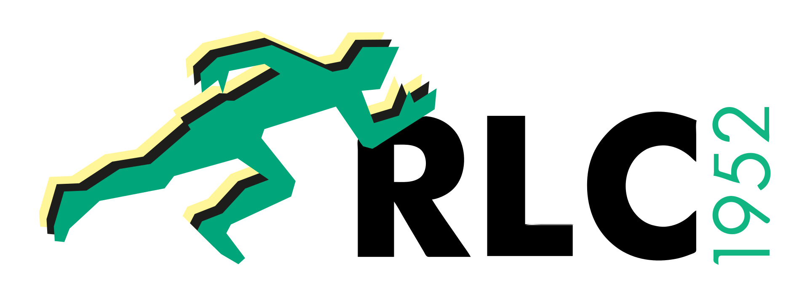

Menschen, Geschichte und Partner des RLC 1952.
Diese Seite bündelt den aktuellen Vorstand, Partner und wichtige Vereinsinformationen. Satzung, Schutzkonzept, Ehrenkodex und weitere Unterlagen werden ergänzt, sobald sie final freigegeben sind.

Unser Vorstand und Team.
Seit 1952 Leichtathletik in Recklinghausen.
Der Recklinghäuser Leichtathletik Club 1952 e.V. wurde am 2. November 1952 von 21 Recklinghäuser Leichtathleten gegründet. Bis dahin waren die Aktiven meist Unterabteilungen von Fußball-, Handball- oder Turnvereinen; der RLC gab der Leichtathletik in Recklinghausen einen eigenen Verein.
Bereits 1953 trainierten knapp 100 Mitglieder auf der Viktoria-Kampfbahn an der Dorstener Straße. 1977 zog der Club in das moderne Stadion Hohenhorst mit Kunststoffbahn um, das bis heute zentraler Trainings- und Wettkampfort ist.
Die 50er und 60er Jahre waren geprägt von Rekorden und Wettkampfreisen. 1959 übersprang Claus Schiprowski bei den Stadtmeisterschaften erstmals vier Meter im Stabhochsprung; 1962 stellte die 3 x 1000-Meter-Staffel mit Wolfgang Peter, Hans-Jürgen Holtermann und Manfred Lubba einen Kreisrekord auf.
In den 70er Jahren prägten internationale Vergleichswettkämpfe das Vereinsleben, unter anderem mit Erfolgen gegen Dordrecht. In den 80er Jahren machten Pfingstsportfeste nationale und internationale Leichtathletik sichtbar.
Seit den 90er Jahren stehen Kinder- und Jugendarbeit, Nachwuchsförderung und Breitensport noch stärker im Fokus. Kreismeistertitel, Westfalenmeistertitel und gute Platzierungen bei Deutschen Meisterschaften zeigen diese Entwicklung bis heute.
Freigegebene Vereinsunterlagen.
Schutzkonzept
Folgt, sobald die freigegebene PDF-Datei vorliegt.
Ehrenkodex
Folgt, sobald die freigegebene PDF-Datei vorliegt.
Unsere Partner.
bodynostic by Lückenotto – das Bewegungslabor
Begleitet den Verein als sichtbarer Partner rund um Bewegung, Events und Vereinsalltag.
Partnerseite öffnenSparkasse Vest Recklinghausen
Unterstützt den regionalen Sport und die Vereinsarbeit vor Ort.
Partnerseite öffnenLauflust Recklinghausen
Partner mit Bezug zu Laufkultur, Bewegung und regionalem Sport.
Partnerseite öffnenFragen zu Verein, Vorstand oder Partnern?
Der zentrale Kontakt bleibt info@rlc1952.de. Weitere offizielle Unterlagen werden nach Freigabe ergänzt.